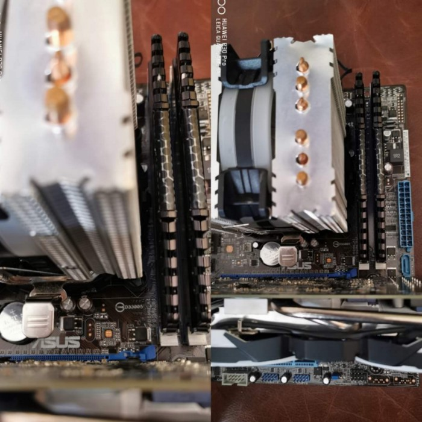
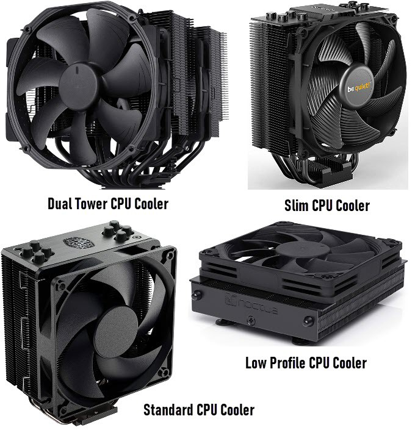
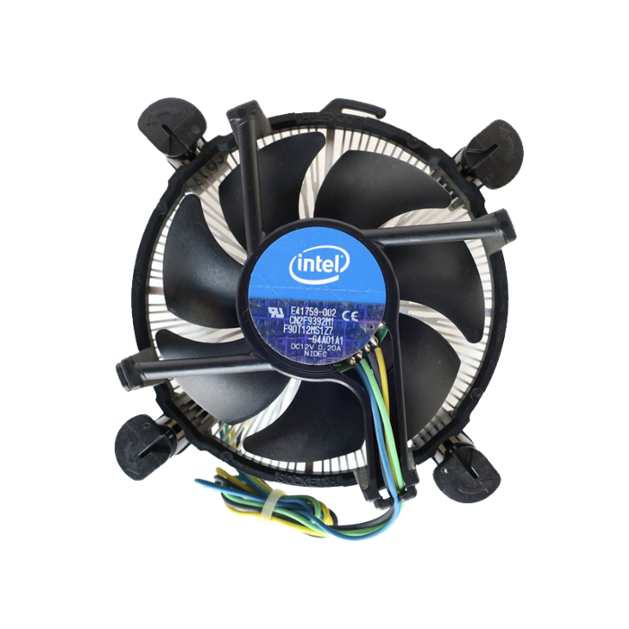
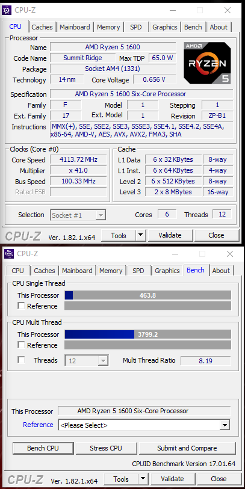
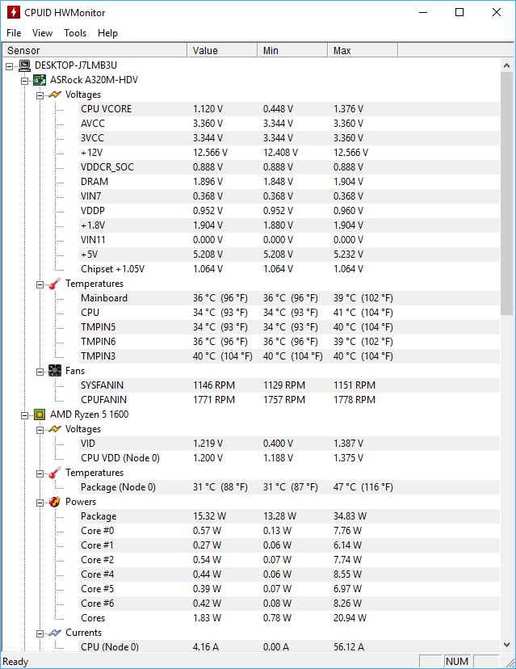

Heat sink mount pushing against the RAM stick
One of my customers brought this PC with the hopes of getting it fixed. Said he got random BSODs. Said he assembled it himself. So naturally, I felt like looking inside before doing anything.
As I suspected, He installed this tower-styled CPU cooler just facing the wrong side. Forcing the ram stick to be pushed outside. As it is painful to watch, this was the reason behind the BSODs he was getting. If this issue persisted long enough it could’ve bricked the motherboard. But everything was fine once I reseated the CPU cooler everything worked smoothly. I just wanted to share this story with you guys before jumping into the topic at hand.
And I hope you guys learned something from my experience. As you can see this is the right way to install your CPU cooler.
Your CPU fan should blow air to the side where your exhaust fan is located. Thus enabling your exhaust fan to suck the hot air out of the case. (Tower-styled CPU coolers)
Heat sink reseated the correct way
Here are four types of after-market CPU heat sinks you can buy.
Aftermarket heat sinks
These types of heat sinks perform well under extreme conditions. Though the idle temps of OEM heatsinks and these aftermarket heat sinks are the same, when the temperature goes higher the tower-style CPU cooler seems to hold the temps at a certain level. The mechanism these heat sinks come with is a little different from the OEM heat sink you get with most PCs. As you can see from my encounter with this particular client, people often struggle while fitting it to the motherboard. It's good if you refer to the manual it comes with before making any moves. Or it can result in damaging your other components.
This is the type of heatsinks that comes with stock PCs
These heatsinks perform well under normal workloads (Office environments) and they're designed to handle that type of heat. But if you plan on overclocking your CPUs and running CPU-intensive tasks such as video editing, rendering, and gaming, this is NOT the right CPU Cooler for you. If you plan on doing either one of those things I mentioned, you'd be better off with a liquid CPU cooler with a radiator or a tower-style heat sink. They are designed to handle that type of extreme environment. If you run CPU-intensive tasks on heat sinks like this you will approach the Maximum Tjunction of the CPU pretty soon. Then your CPU will start to throttle, lowering its performance to cool down or it will shut down if you go over the Tjuction.
Yeah I know, what's this Tjunction right?
Tjunction (also known as TJ) is the CPU core temperature, measured by a digital thermal sensor (DTS) located within each CPU core. Your CPU getting close to the max Tjunction regularly can result in reducing the lifespan of your CPU over time.
Yes!
You can use CPU Z to stress your CPU to see how your CPU cooler holds up. This is a free software you can use to check information about your CPU and it has the ability to stress it.
You can stress your CPU using this software
HW Monitor is a free software you can use to monitor all the necessary information regarding your PC. If your CPU temps hold up around 60–80C under full load, you’ll be fine. And remember ambient temperature plays a big part in this process too. You should have a firm idea about the average ambient temp around the environment in which your PC is placed.
You can monitor your PC with this software
Short answer? Sure, it's positive air pressure.
What is Positive air pressure?
The case fans push more air into the case than then pull out, so there is more air pressure inside of the case. This ensures that air is only sucked in through the fan you have installed in the case. Ideally, you'll have dust filters in those areas, thus lowering the amount of dust getting inside the case.
What is Negative air pressure?
More air is being pulled out of the case than being pushed in, This can result in creating a vacuum through the holes of the case and filling it with dust. You won't have dust filters in these holes and this condition will fill your case with dust over time.
Even if you have a factory assembled PC it's good to have an aftermarket CPU cooler installed because OEM coolers tend to let your CPU heat more and more. It's not good for your CPU. Consider how much room you have inside the case before buying your CPU cooler. When you do, if you're more of a DIY person, then pay attention to the manual you get with the CPU cooler. It'll have clear instructions on how to proceed. And make sure you have a positive air pressure condition inside your case. Those key points will help you expand the lifetime of your PC. I know I left out liquid cooling systems for PCs in this article. I will cover them in detail later on in another article.
Posted on: July 30th, 2021
Tags: #IT #Hardware #Cooling #StressTesting